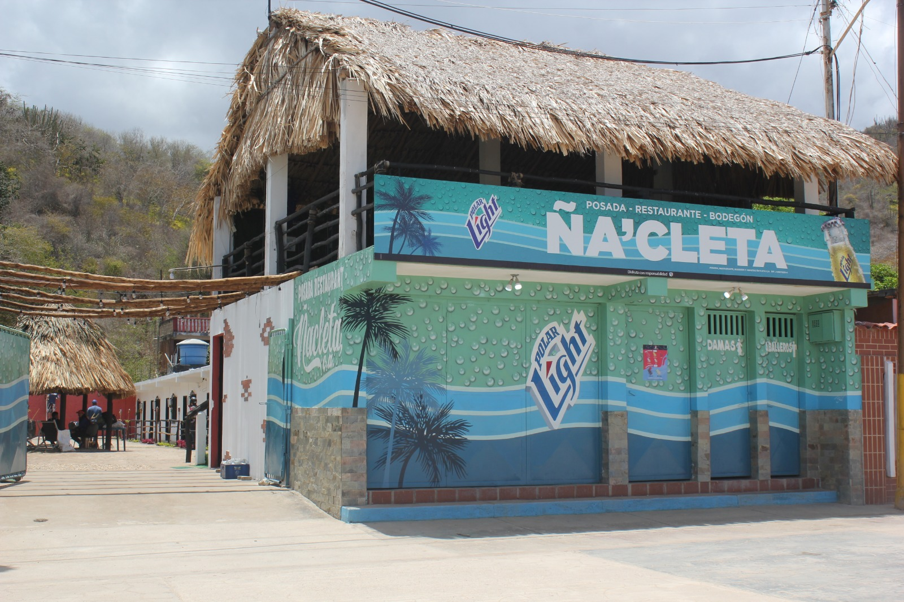

| Nombre | Direción | N° de telefono | ||
|---|---|---|---|---|
| Posada Turística Mareca Cabaña Amobladas C.A | Urb. Copey Av. la Restinga. | 0424-8370551 | visitar | |
| Posada Turística las Palmeras C.A | Carretera Nacional Carúpano-Cumaná sector Pozo Colorado | 04121854288 | visitar | |
| Posada Beba C.A. | Carretera Nacional Carúpano-Cumaná sector Pozo Colorado | 0412-1191190 | visitar | |
| Posada Divino Niño C.A. | Calle Calvario a 100 metros de la Iglesia Santa Catalina. | 0294-3320823 | visitar | |
| Posada Playa Colorada C.A | Posada Playa Colorada C.A | 0414-8808946 | visitar | |
| Posada Don Carlos C.A | Carretera Nacional Carúpano-Cumaná a 200 metros del cementerio parque playa grande. | 0412-1435273 | visitar | |
| Posada Mamá Dominga | Urb.Tío Pedro Sector Medalla de Oro. | 0414-8031556 | visitar |